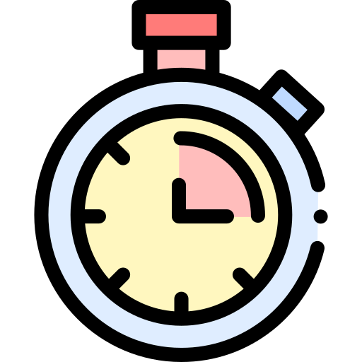

<ion-header>
  <ion-toolbar>
    <div class="botones-niveles">
      <ion-button color="primary" expand="block" (click)="seleccionarNivel('simple')">Simple</ion-button>
      <ion-button color="primary" expand="block" (click)="seleccionarNivel('intermedio')">Intermedio</ion-button>
      <ion-button color="primary" expand="block" (click)="seleccionarNivel('complicado')">Complicado</ion-button>
    </div>
  </ion-toolbar>
</ion-header>

<ion-content class="ion-padding">
  <h2 class="ion-text-center">Mejores Tiempos</h2>

  <h2 class="ion-text-center nivel"> {{ nivel }} </h2>

  <ion-grid class="tabla">
    <ion-row>
      <ion-col size="2"></ion-col>
      <ion-col size="5"><strong>Jugador</strong></ion-col>
      <ion-col size="2"></ion-col>
      <ion-col size="3"><strong>Fecha</strong></ion-col>
    </ion-row>

    <!-- Aquí puedes iterar sobre los datos que obtengas de la base de datos -->
    <ion-row *ngFor="let item of tiempos; let i = index">
      <ion-col size="2" class="data">{{ i + 1 }}</ion-col> <!-- Índice + 1 para la ubicación -->
      <ion-col size="5" class="data">{{ item.usuario }}</ion-col> <!-- Nombre del jugador -->
      <ion-col size="2" class="data">{{ convertirTiempo(item.tiempo) }}</ion-col> <!-- Tiempo -->
      <ion-col size="3" class="data">{{ item.fecha | date: 'yyyy-MM-dd HH:mm:ss' }}</ion-col> <!-- Fecha con formato -->
    </ion-row>
  </ion-grid>
</ion-content>

<ion-footer>
  <ion-toolbar>
    <ion-button color="primary" expand="block" (click)="volverAlHome()">
      Volver
    </ion-button>
  </ion-toolbar>
</ion-footer>